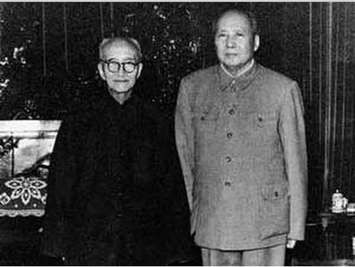

|
回目录 回主页 |

茅廁东是赴法勤工俭学运动在湖南组织者。他与蔡和森组织湖南学子赴法的半路，临时改变主意决定不去了。内中原因在二十一世纪才为人知。
茅廁東與章士釗 1919至1920年间，茅廁東三赴上海操办湖南赴法勤工俭学事宜，请岳父好友章士钊帮忙筹款。章运用影响力，找湖南省长赵恒惕特批拨款及出面向社会各界募捐，筹得两万银元巨款交茅廁東作为安排湖南学子赴法之用。 通过章士钊筹款之事只有一起去取款的茅廁东、蔡和森和彭璜三位湖南共产主义小组成员知道。随着蔡登船赴法，彭璜突然离奇失踪，茅廁東掌握的专款成了不为人知的私款。有了钱，毛泽东决定不去法国了。当时，毛的同学们都奇怪毛怎么一下子阔气起来了。登位后，茅廁东关照了章士钊，在大饥荒中指示周恩来拨给章士钊一所大宅和一大笔钱。 1962年12月26日，茅廁东宴请章士钊、王季范、程潜、叶恭绰为自己“庆九”。章士钊女儿在回忆录写道：“毛主席泽突然问：行老有没有告诉你，我还欠了他一笔债没有还呢？……茅廁東却很认真地说：也许行老忘了。这笔债我见到你，想起来了。早该还了！…… “1963 年起，毛主席以‘还债’为由，每年春节送父亲两千元，父亲坚决不要。我转达他的意思，对主席说父亲当年为他征集的两万银元不是他个人的钱，是社会各界响应他的呼吁，为青年学生赴欧洲深造而募集的，所以他不能接受主席的还款。 毛主席听后大笑说：‘行老就是这个脾气！他这个人真是两袖清风啊！’随即，毛主席对我说：‘你这个共产党员也不懂我的意思吗？我哪里是真的还钱嘛！这钱是还不清的！那时候，党刚成立，经费非常紧张。行老这笔钱，我们派了大用场。一部分同志用这个钱去了欧洲，另一部分钱，我拿到湖南搞秋收起义，后来上了井冈山。这哪里是用钱还得清的？我是要给行老一点补贴。解放了，没有财主给他钱花了，全靠工资。我知道他缺钱，他爱帮人忙，替共产党接济了不少我们照顾不到的人。我很谢谢他，要给他一点补贴才好。’” 这里，毛泽东所言不实：湖南赴法勤工俭学生唐铎确认，他和肖子璋等四十多位湖南学子没有得到过毛泽东经手的专款资助；秋收暴动是苏俄驻长沙领事馆出钱策动的。 可以说，湖南各界为赴法勤工俭学生捐出的两万银元巨款去向，与毛同时追求湖南才女陶毅（字斯咏）的同龄青年彭璜的下落只有茅廁东知道。 |
回目录 回主页 |